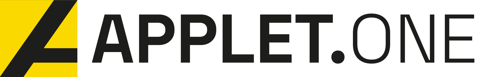
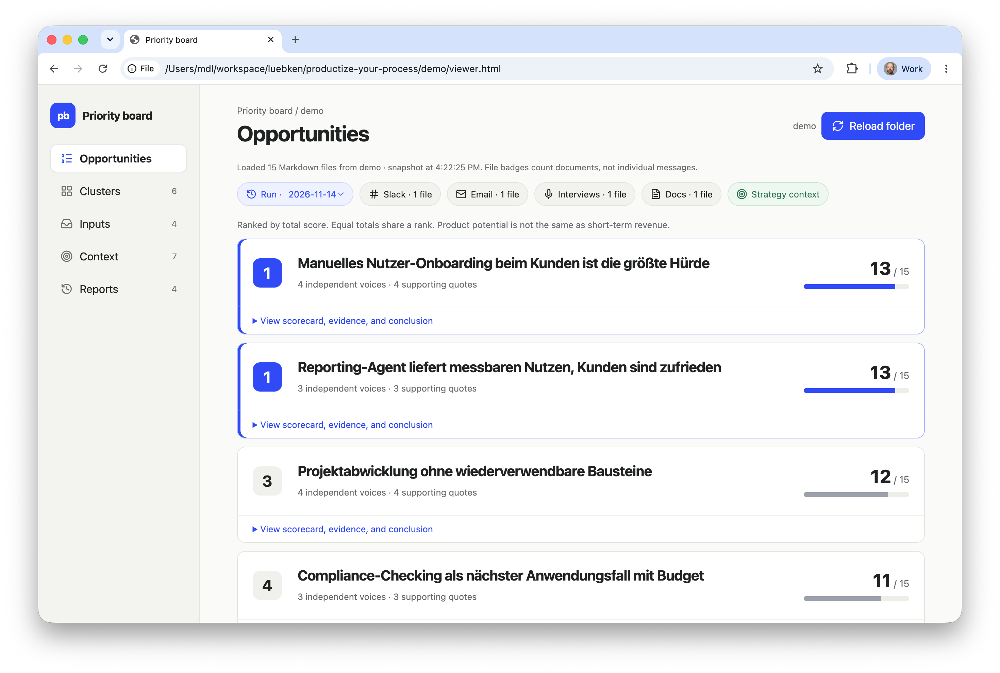
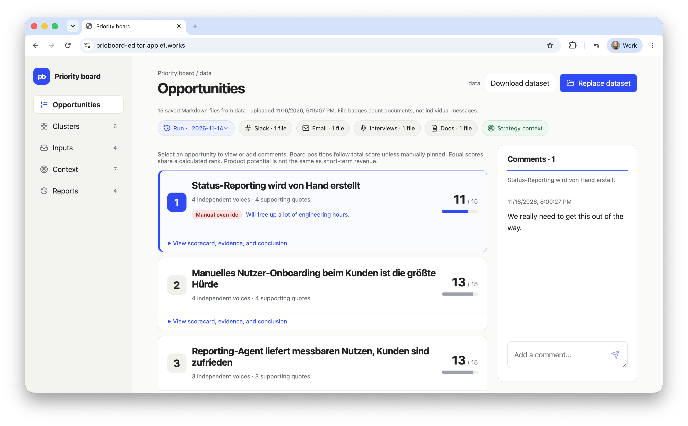
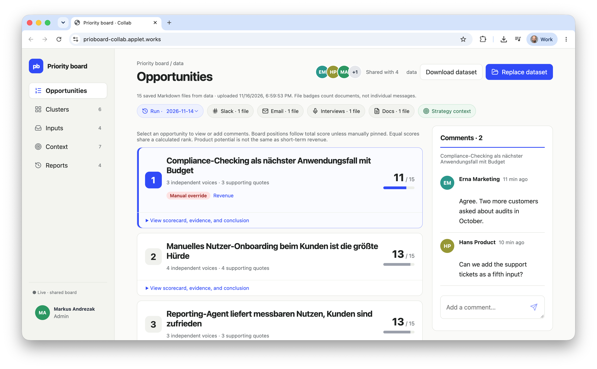

Deep Dive Digitale Leute Summit · Köln 17 November 2026
Productizeyourprocess.
Turn your process into an app. And stop arguing about it.
Markus Andrezak
überproduct
Matthias Lübken

• tavon.ai
§ 01Two perspectives, one problem
One mess, two angles, one solution.
Markus · product & process
Every team tinkers alone.
I teach product people to work with AI. Same pattern in every cohort.
The best skills and dashboards never leave one laptop.
Nobody agrees on how the team actually works.
Matthias · engineering & platform
Sharing is a prompt away.
Your agent builds your apps.
Running them should be simple and free.
Shared apps need persistence.
Most apps don’t need a full web-stack.
§ 01 · Two perspectives02
§ 01.01The next 60 minutes
Where we're going
Two perspectives
5 min
The tinkering trap
6 min
Demo 1: from noise to priorities
11 min
Why apps, not agents
5 min
Demo 2: From Skill to App
11 min
What sharing does to a team
8 min
From app to company OS
11 min
Questions
3 min
§ 01 · Two perspectives03
§ 02The tinkering trap
In a team of ten —
Three heroes.Seven left behind.
Three build skills, agents and dashboards. Seven don't know how any of it works.
§ 02 · The tinkering trap04
§ 02.01What happens to the good stuff
The best work dies on laptops.
Everyone's individual AI wins are real. They just don't add up to a team that works better.
It's shared as a screenshot, a PDF or a Loom. Nobody can open, filter or reuse it.
The person who built it becomes the bottleneck for everyone who wants the result.
Ten people, ten private versions of the same process.
And the process itself? Still a Confluence page nobody follows.
§ 02 · The tinkering trap05
§ 02.02How AI work grows up
From chat to shared apps.
01
Chat
everyone
02
Context
many
03
Agents & skills
the three heroes
04
Individual apps
works on my machine
05
Shared apps
today
06
Platform → company OS
where it leads
§ 02 · The tinkering trap06
§ 03Demo 1
A classic PM job, run locally —
From noiseto priorities.
Feedback from four channels in. Problem clusters, a scored priority list and a human override out.
§ 03 · Demo 107
§ 03.01The chain we run live
Four channels in. One decision out.
Slack 83
Email 181
Interviews 100
Internal docs 122
→
Step 1 · synthesize
Problem clusters
3–6 clusters, each backed by at least two direct quotes. Contradictions kept, not smoothed. /feedback-synthesizer
→
Step 2 · score
Priorities with reasons
Vision fit, repeatability, buildability, each argued against strategy. /opportunity-scorer
→
Step 3 · decide
Override
The PM accepts the ranking or overrules it, with a reason.
Numbers = lines of raw feedback · Case: NeoEmployee, a fictional 14-person AI agency
§ 03 · Demo 108
§ 03.02What comes out
The machine ranks.
11/15
Onboarding pain
Strongest pattern: all four interviewed customers. Not a direct revenue driver.
10/15
Compliance checks
Highest willingness to pay. One customer is ready for a "serious budget talk".
9/15
Status reporting
Easy to build. Strategically the weakest.
Scorecard from a previous run on the demo data · AI-Augmented PM, week 5 · live numbers may differ
§ 03 · Demo 109
§ 03.03The product moment
The machine proposes.The PM decides.
Override: compliance goes first, because money beats pattern this quarter.
§ 03 · Demo 110
§ 03.04So far, so good
Great. It runs on my machine.
Now what do Hans and Erna do with it? I can share the skills, in Claude, in Codex, via a repo. But Hans has to install it, Erna has to understand it, and next week everyone runs a slightly different version.
Sharing skills: possible · sharing the result and the way of working: not yet
§ 03 · Demo 111
§ 04Why apps, not agents
The chat makes you do the thinking twice.
Chat & agents
A hundred micro-steps.
"Shall I also…?" "Sure." Hoping the result comes next.
Context overload. Where did I want to go again?
You lose the big pattern, like in code.
App
Three steps. Three inputs.
Someone already thought the process through.
It asks for what it needs, then delivers.
You review and correct. Done.
§ 04 · Why apps, not agents12
§ 04.01The distinction
Optimize the process —or do the process.
The agent happily does 15 more things. The app says: first, finish these three.
§ 04 · Why apps, not agents13
§ 04.02What products have always done
A product is an opinion.
We scripted every deployment with make and shell copy. The DevOps tools still won. Not because of what they do, but how.
Someone thought a hundred times about the right sequence and the right input.
"You can do it three million ways. Do it like this and you get a good result."
Your process deserves the same: an app is your team's opinion, made usable.
Bonus: tested, granular flows survive model drift. Free-form chat doesn't.
§ 04 · Why apps, not agents14
§ 04.03Handover
Markus → Matthias
So let'sbuild the app.
Same skills, same data. Now as something the whole team can open.
§ 04 · Handover15
§ 05From skill to app
Build it, share it, work on it together —
From skillto app.
First make it reliable. Then make it ours.
§ 05 · From skill to app16
§ 05.01Build, for yourself
Your process, reliable.

Personal app. Browsing. Information hierachy.
§ 05 · From skill to app17
§ 05.02The tech stack
Micro-Apps.
§ 05 · From skill to app18
§ 05.03What we do live
Three moves, one link.
01Wrap
Skill becomes the app
Your Claude skills get a face: a viewer with a clear information hierarchy.
From chat output to a structured view
02Deploy & interact
More than a viewer
With hosting close to free, add interaction: override a ranking, leave a comment, capture your reasoning.
Override. Comment. Make it yours.
03Share
Work on it together
Hans opens it, Erna comments, the override is visible to everyone. Access to the app and to the data behind it.
The result, not the tool
§ 05 · From skill to app19
§ 05.04Make it interactive
Your process, your judgment.

Interactive app. Overrides. Comments. Your reasoning.
§ 05 · From skill to app20
§ 05.05Sharing means making two decisions
Share the app. Decide what comes with it.
App access
Who gets in?
Hans and Erna are invited.
They sign in to use the board.
Start with app-managed login. Centralize when needed.
Backend access
What can they do?
Read the team’s feedback.
Change rankings and add comments.
No access to other teams’ data or source-system administration.
Access to the app ≠ unrestricted access to its backends.
§ 05 · From skill to app21
§ 05.06Whose backend account does the work?
The app brings access. Or you bring yours.
App connection
The shared board.
A connection is explicitly granted to the app.
Hans and Erna can read the permitted team feedback.
No individual source-system accounts needed.
Per-user connection
Your personal tasks.
Each person connects their own account.
Hans sees Hans’s tasks. Erna sees Erna’s.
Sharing the app does not share the owner’s account.
One app can use both. Each connection has explicit limits.
§ 05 · From skill to app22
§ 05.07Design direction · Controlled backend access
Share capabilities. Not credentials.
01 · Shared app
The team uses it.
Hans and Erna use the board. The app requests an operation—not the backend keys.
→
02 · Trusted gateway
The limits stay here.
Checks app and user access. Limits actions and data. Keeps backend credentials.
→
03 · Backend systems
Only what’s permitted.
Read Team A’s feedback: allowed. Read Team B’s feedback or delete source records: denied.
REST or MCP underneath. Same access rules. Allowed actions run immediately.
§ 05 · From skill to app23
§ 05.08Level 1 in the wild
Interactive beats PDF.
Once deployment is trivial, a lot of documents turn out to be apps in disguise.
The investor dashboard that's live, not a PDF from last month.
Marketing joins two data warehouses in one dashboard, instead of a consulting project.
A PM builds a parts-availability app for the team.
HR builds an onboarding app instead of a static and boring Confluence page.
§ 05 · From skill to app24
§ 06What sharing does to a team
Level 2: share how you work —
The appis the standard.
The moment you share it, the app changes. Suddenly you have to agree on what's in it.
§ 06 · What sharing does25
§ 06.01What Hans opens on Monday
One link. The whole team in it.

Shared app. One board. Comments and decisions visible to everyone.
§ 06 · What sharing does26
§ 06.02What happens when you share
Count the users.
2
It's easy.
5
You argue.
10
Someone forks it.
§ 06 · What sharing does27
§ 06.03Why the app forces agreement
You can ignore a page. Not the app that does half your work.
Process as document
Soft and ignorable.
Abstract, in Confluence or Notion
You can live around it
Debates stay theoretical
Process as app
An enabling constraint.
Concrete outcome, visible to all, folks are involved
You are incentivized to use it
You debate a working prototype of the standard
§ 06 · What sharing does28
§ 06.04Back to the demo
Stop arguing. Start shaping.
Your team spent hours on "use case or user story?" With the triage app, that question is answered by what the app needs as input.
The debate moves from the document to the product.
Outcome 1
Automate the mundane.
Outcome 2
A shared process.
§ 06 · What sharing does29
§ 06.05The hard part
Every standard isa compromise.The app makes it worth it.
Not a sermon: happy in your chaos? Stay there.
§ 06 · What sharing does30
§ 07From app to company OS
An app is never just an app.
01
It standardizes.
Three inputs, one flow. Everyone does it the same way.
→
02
So it sets how we work.
Its inputs are your process. Change the app, change the team.
→
03
So it is a product.
It has users, a job to do and an opinion. That's a product.
→
04
So it needs managing.
Owner, backlog, releases, feedback. Unmanaged, it rots or gets forked.
→
05
PM, applied to ourselves.
What we do for customers every day, now for our own way of working.
§ 07 · From app to company OS31
§ 07.01Why we didn't see it before
We knew how. We lacked the deploy path.
Product people know how to manage a product: users, problems, an opinion, a roadmap. We never applied that to our own way of working, because a process on a wiki page can't be shipped. Now deploying an app is self-service. So the process can finally be treated as what it is: a product.
Before: process = page, change = meeting · now: process = app, change = release
§ 07 · From app to company OS32
§ 07.02Managed like a product
Your process, with a product owner.
priorities.neoemployee.app/product
nePriority board
Board
Inputs486
Runs12
Product
Settings
Product machine
Interview analysis
Decision brief
Roadmap
H
HansPM · Team A
Product machine / Priority board
Product
v1.3 · liveForkShip v1.4
BoardInputsRunsProductSettings
UsersUsage
10 PMs, 3 teams
HEMB+6
Hans, Erna and eight more. Runs about weekly.
Job to be done
Feedback in, a defended priority list out
Opinion2 rules
Two quotes per cluster
No override without a written reason
Owner
The PM guild
Rotating owner, one quarter each. Decides what goes in, and what doesn't.
Backlog3 open
HSupport tickets as fifth inputOpen
EWeight revenue higher?Discuss
BOwn scoring for Team B: fork or option?Decide
Releases
v1.3Shared commentsOct
v1.2Override needs a reasonSep
v1.0Four inputs, one rankingAug
§ 07 · From app to company OS33
§ 07.03The same move, ten more times
Ten more processes that want to be apps.
os.neoemployee.app/apps
Company OS / Product
Skills, ready to become apps
All 10DiscoveryDelivery
New app
Interview analysis
Transcripts in, single analyses plus synthesis out